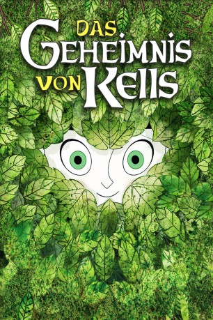

#1539 Brendan und das Geheimnis von Kells
Auszeichnungen: für 1 Oscars nominiert
 
 IMDB-Wertung: 7.7 / 10
IMDB-Wertung: 7.7 / 10  Metascore: 81
Metascore: 81 
Im frühmittelalterlichen Irland lebt der kleine Brendan in einer einsamen Abtei am Rande des großen Waldes. Eine Invasion der Wikinger wird befürchtet, alles hilft beim Bau von Befestigungsanlagen. Doch Brendan interessiert sich viel mehr für das geheimnisvolle Buch im Gepäck des durchreisenden Mönches Aidan. Um Farben für dessen kostbare Illustrationen aufzutreiben, wagt er sich sogar gegen das Verbot des Abtes allein in den Wald. Dort wimmelt es vor unheimlichen Gestalten, und Brendan gewinnt die Freundschaft einer Elfe.
Jahr: 2009
Dauer: 75 Minuten
FSK: 6
Land: Frankreich Studio: Ascot Elite Home EntertainmentTonspuren: DTS - ,
Untertitel: Deutsch,
Auflösung: 1080p (1920x1080) Größe: 4096 MB
Genre: Animation/Trick, Abenteuer, Familie, Fantasy
Regisseur: Tomm Moore, Nora Twomey
Drehbuch: Tomm Moore, Fabrice Ziolkowski
Soundtrack: Bruno Coulais
Darsteller:
 Brendan Gleeson als Abbot Cellach
Brendan Gleeson als Abbot Cellach- Paul Young als Brother Square
- Sean Lennon als Additional Voices and Walla
- Evan McGuire als Brendan
- Christen Mooney als Aisling
- Mick Lally als Aidan
- Liam Hourican als Brother Tang / Leonardo
- Paul Tylak als Brother Assoua
- Michael McGrath als Adult Brendan
- Nora Twomey als Additional Voices and Walla
- Alli McCann als Additional Voices and Walla
- Clair Funchion als Additional Voices and Walla
- Conor O'Halloran als Additional Voices and Walla
- Gaelle Hersent als Additional Voices and Walla
- Marie Thorhauge als Additional Voices and Walla
- Jonas Till Hoffmann als Additional Voices and Walla
- James O'Halloran als Additional Voices and Walla
- Fabian Erlinghauser als Additional Voices and Walla
- Kairen Waloch als Additional Voices and Walla
Datei: X:\Kinder Filme (A-F)\Brendan und das Geheimnis von Kells (2009, FSK6, 1920x1080).mkv seit 14.07.2015
Festplatte: Kinder-Filme+Trick
 Es gibt insgesamt 68 Filme in der Gruppe 'Kinder Filme (A-F)'
Es gibt insgesamt 68 Filme in der Gruppe 'Kinder Filme (A-F)'